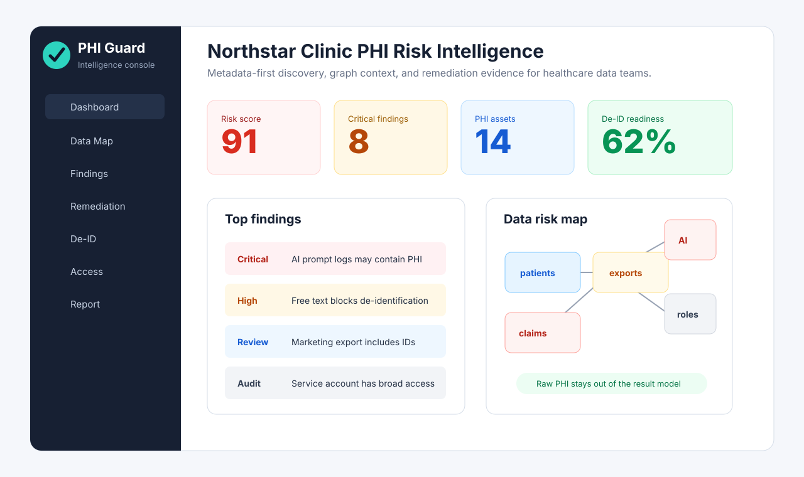
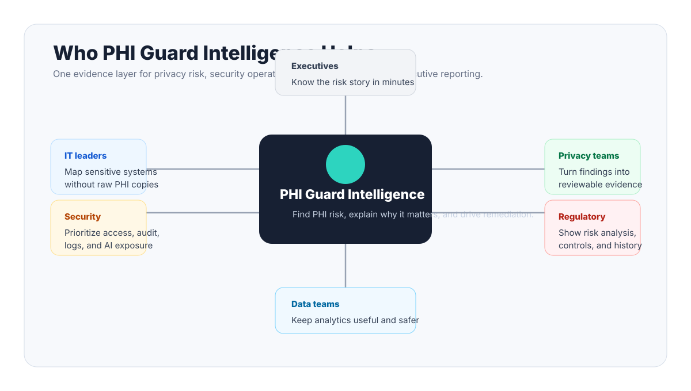
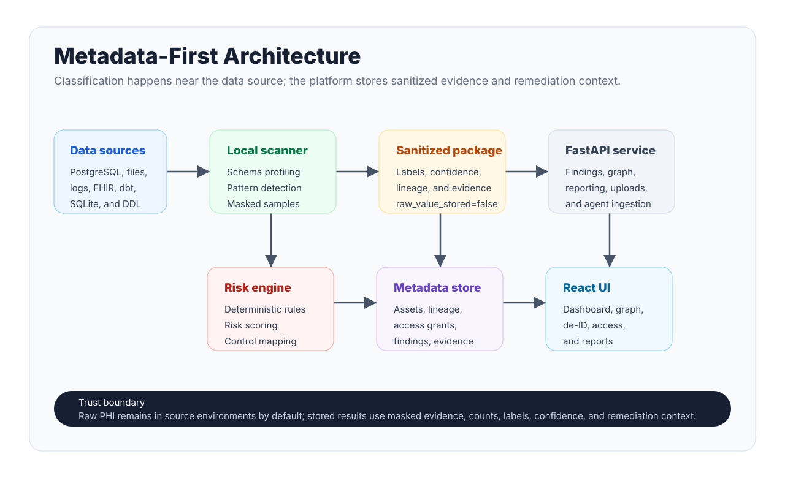
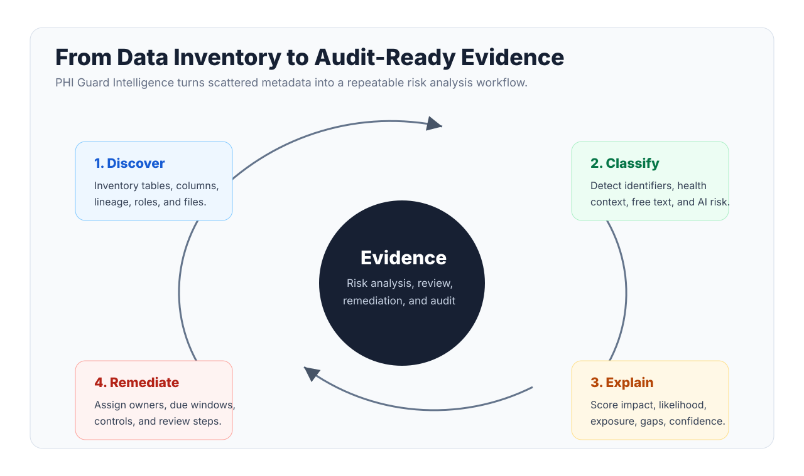

Healthcare data risk intelligence
PHI Guard Intelligence
Find where potential PHI risk lives, how it moves, who can access it, and what should be fixed first.

The problem
Healthcare data risk is scattered across systems.
Where is PHI, who can access it, where does it flow, and what should we fix first?
- Production databases, analytics exports, logs, support tickets, AI workflows, FHIR payloads, and vendor data flows all create visibility gaps.
- Catalog, DLP, GRC, and security tools each cover part of the problem, but buyers need a shared evidence layer.
The product
A risk intelligence map built for healthcare data teams.
- Classifies PHI-risk signals and de-identification blockers.
- Maps assets, lineage, access, findings, AI/log destinations, and controls.
- Explains risk with evidence, blast radius, confidence, and remediation steps.
91risk score
8critical findings
14PHI assets
62%De-ID readiness
Buyer value
One evidence layer for IT, security, privacy, data, and regulatory review.

Architecture
Classify near the data. Send sanitized evidence.

Regulatory workflow
From discovery to audit-ready evidence.

Demo flow
Five moments that sell the product.
- AI prompt/log table with PHI-risk signals.
- Free-text notes blocking de-identification readiness.
- Marketing export with identifiers and diagnosis context.
- Broad analyst or service-account access to combined PHI.
- Remediation backlog with controls, owners, effort, and due windows.
Credibility
This is a working product prototype, not only a pitch.
- React/TypeScript frontend, FastAPI backend, Python scanner and rule engine.
- Scanner-agent CLI, PostgreSQL metadata schema, Docker scaffolding, and synthetic healthcare data.
- Tests cover API contracts, classifier behavior, importers, demo scans, and scanner-agent packages.
Close
PHI Guard Intelligence helps healthcare teams see risk clearly enough to reduce it.
Where PHI risk lives. How it moves. Who can access it. Why it matters. What to fix first.
Guardrails and sources
HIPAA-oriented risk intelligence, not legal advice or certification.
Public HHS references used for positioning:
- Risk analysis guidance: https://www.hhs.gov/hipaa/for-professionals/security/guidance/guidance-risk-analysis/index.html
- De-identification guidance: https://www.hhs.gov/hipaa/for-professionals/privacy/special-topics/de-identification/index.html
- Privacy Rule summary: https://www.hhs.gov/hipaa/for-professionals/privacy/laws-regulations/index.html